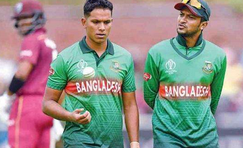
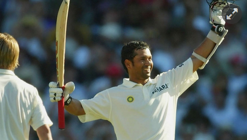
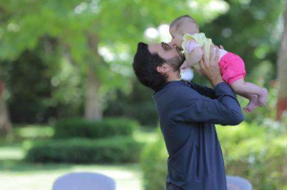

| News-portal360 |
|---|
৫ জুলাই,২০২০
বাংলাদেশের বিপক্ষে যে চ্যালেঞ্জ ছিল স্টিভ ওয়াহর

বাংলাদেশের বিপক্ষে টেস্টে অ্যান্ডি বিকেলের জায়গায় তরুণ ব্রেট লিকে সুযোগ দেওয়ার কঠিন সিদ্ধান্ত নিতে হয়েছিল অধিনায়ক স্টিভ ওয়াহকে। নব্বই এর দশকের শেষের দিকে অস্ট্রেলিয়ার চেয়ে নাকি অস্ট্রেলিয়া 'এ' দলটাই বেশি শক্তিশালী ছিল। মাইকেল স্লেটার ও মার্ক টেলর ছিলেন অস্ট্রেলিয়া দলের ওপেনার, অস্ট্রেলিয়া 'এ' দলের হয়ে ইনিংস শুরু করতেন তখন ম্যাথু হেইডেন, জাস্টিন ল্যাঙ্গার, অ্যাডাম গিলক্রিস্টরা। অস্ট্রেলিয়া জাতীয় দল সাজানোর কাজটাও তাই বেশ কঠিন ছিল। অধিনায়ক স্টিভ ওয়াহকেই মূখ্য ভূমিকা পালন করতে হতো তাতে। সম্প্রতি স্কাই স্পোর্টসকে দেওয়া এক সাক্ষাতকারে সেসব কথা বলতে গিয়ে স্টিভ ওয়াহ টেনে আনেন বাংলাদেশ প্রসঙ্গ। ২০০৩ সালে বাংলাদেশর বিপক্ষে টেস্ট সিরিজেও এমনই কঠিন পরিস্থিতিতে পড়তে হয়েছিল তাঁকে। সেবার দুই টেস্টের সিরিজ খেলতে অস্ট্রেলিয়া সফর করে বাংলাদেশ দল। টেস্ট ক্রিকেটের তখনকার 'শিশু' বাংলাদেশকে গুড়িয়ে দিতে ডারউইনে সবুজ উইকেট বানায় অস্ট্রেলিয়া। এক স্পিনার স্টুয়ার্ট ম্যাকগিলের সঙ্গে তিন পেসারে দল সাজাতে পছন্দ করতেন ওয়াহ। গ্ল্যান ম্যাকগ্রা ও জেসন গিলেস্পির সঙ্গে তৃতীয় পেসার হিসেবে অ্যান্ডি বিকেলের খেলার কথা শোনা যাচ্ছিল। কিন্তু ওয়াহ চাইলেন উল্টোটা। বিকেলের লাইন-লেংথের চেয়ে লি'র গতিই ছিল তাঁর বেশি পছন্দ। তরুণ ব্রেট লি'র সামনে নড়বড়ে বাংলাদেশকে ঠেলে দেওয়ার ইচ্ছে হলো অস্ট্রেলিয় অধিনায়কের। ব্রেট লির টেস্ট খেলার অভিজ্ঞতাও বাড়ল, আবার পেস সহায়ক উইকেটে বাংলাদেশকে দ্রুতআউটও করা হলো। প্রথম টেস্ট থেকে বিকেলকে বাদ পড়ার কথা জানানোর কঠিন কাজটা অধিনায়ককেই করতে হয়েছিল। ডারউইন টেস্টের আগের দিনের কথা মনে করে ওয়াহ বলেছেন, 'বাংলাদেশের বিপক্ষে টেস্টে ব্রেট লি অথবা অ্যান্ডি বিকেলের যে কোন একজনের খেলার কথা। টেস্টের আগের দিন অনুশীলন শেষে দেখলাম সবাই আমাকে এড়িয়ে চলছে। কারণ টেস্টের আগের দিন অধিনায়ক কথা বলতে আসা মানেই খারাপ খবর। আমি বিকেলের কাছে যেতেই সে হতাশায় মাথা নিচু করে ফেলল। আমি কিছু বলার আগেই সে বুঝে গিয়েছিল। তবে অস্ট্রেলিয়াকে সর্বকালের সেরা দলে পরিণত করার কৃতিত্বটা স্টিভ ওয়াহ একা নেননি। বাদ পড়া ক্রিকেটারদের মানসিকতাকেও অস্ট্রেলিয়া দলের দাপুটে পারফরম্যান্সের বড় কারণ মনে করেন সাবেক অধিনায়ক, 'পর দিন সবুজ উইকেটে বাংলাদেশকে ব্যাটিংয়ে পাঠাই। ভেবেছিলাম মধ্যাহ্ন বিরতির মধ্যেই তাদের অলআউট করে ফেলব। সকালে ব্রেট লি ভালো বোলিং করেনি। লাইন-লেংথ ঠিক ছিল না। বিরতিতে বিকেল নিজেই ওকে উৎসাহ দেয়। কোথায় ভুল হচ্ছে ধরিয়ে দেয়। পরের সেশন ব্রেট লি উইকেট নেয়, ভালো বোলিং করে। পরের ১৮ মাস আমরা বোলিং আক্রমণে কোন পরিবর্তন করিনি। দলের জন্য বিকেল নিজেকে বিসর্জন দিয়েছিল।' সাক্ষাতকারে মাইকেল কাসপ্রোভিচ, টম মুডি, স্টুয়ার্ট ম্যাকগিল, জাস্টিন ল্যাঙ্গারের মতো ক্রিকেটারদের কথাও বলেছেন ওয়াহ। অস্ট্রেলিয়ার বিশ্বসেরা দলে পরিনত হওয়ার পেছনে তাদের অবদানও ছিল গুরুত্বপূর্ণ।

কোহলিকে স্লেজিং করা মানে নিজের পায়ে কুড়াল মারা
বিরাট কোহলিকে স্লেজিং করার ভুল করতে চান না অস্ট্রেলিয়া ফাস্ট বোলার জশ হ্যাজেলউড। ভুল থেকে ভালোই শিক্ষা নিয়েছেন অস্ট্রেলীয় পেসাররা। ২০১৪-১৫ মৌসুমে ভারতের অস্ট্রেলিয়া সফরকে বিরাট কোহলিকে আউট করার জন্য ‘স্লেজিং’ করার পরিকল্পনা করেছিল অস্ট্রেলিয়ারা। ডেভিড ওয়ার্নার ও মিচেল জনসন পুরো সিরিজ জুড়ে কোহলিকে স্লেজিং করেন। চার টেস্টের সেই সিরিজে কোহলির ব্যাট থেকে আসে চারটি সেঞ্চুরি। সেই বছরই অস্ট্রেলিয়া যাওয়ার আগে ইংল্যান্ড সফরে কোহলিকে মনে হয়েছিল পাড়ার ব্যাটসম্যান। জিমি অ্যান্ডারসন সুইং দিয়ে কোহলিকে আউট করছিলেন বলে কয়ে। অস্ট্রেলীয়রা যেন স্লেজিং করে ঘুমন্ত সিংহকে জাগিয়ে তুলেছিল। এরপর থেকে কোহলিকে স্লেজিং করে আউট করার পরিকল্পনা বাদ দিয়েছে অস্ট্রেলীয়রা। অস্ট্রেলিয়া ফাস্ট বোলার জশ হ্যাজেলউড সম্প্রতি স্টার স্পোর্টসের এক অনুষ্ঠানে বলছিলেন, ‘আমি ওর সঙ্গে কথা-কাটাকাটিতে জড়াতে চাই না। আমার মনে হয় সে চায় যে বোলাররা তার সঙ্গে কথা বলুক। এটাই তার সেরা খেলাটা বের করে আনে। বিশেষ করে সে যখন ব্যাটিং করে তখন বোলারদের ওই ভুল করাটা ঠিক হবে না।’ ২০১৮-১৯ মৌসুমে ভারতের অস্ট্রেলিয়া সফরে ব্যাটিংয়ের সময় কোহলিকে কেউই স্লেজিং করেনি। তবে স্বাগতিক অধিনায়ক ও ফিল্ডাররা কোহলিকে বেশ বিরক্ত করেছে স্বাগতিকেরা। বিশেষ করে অস্ট্রেলিয়ান অধিনায়ক টিম পেইন কোহলির ব্যাটিংয়ের সময় কোহলির বেশ কয়েকবার বাগ যুদ্ধে জড়িয়েছেন। হ্যাজেলউডের কথায় ইঙ্গিত, পরিকল্পনা করেই অধিনায়ক কোহলিকে চাপ ফেলতে চেয়েছিলেন পেইন, ‘যখন সে ফিল্ডিং করে, তখন তার মনোযোগ নিয়ে খেলা করা যায়। কিন্তু তার ব্যাটিংয়ের সময় না। তাকে তার মতো খেলতে দেওয়া উচিত। সে যদি অন্যমনস্ক থাকে তাহলে ভালো।’ ব্রায়ান লারা, স্টিভ ওয়াহ, জাভেদ মিয়াঁদাদ, ভিভ রিচার্ডস, গ্যারি সোবার্সরাও ছিলেন একই ধাঁচের। লালা-স্টিভরা ব্যাটিংয়ে নেমেই কথা চালাচালি করতে পছন্দ করতেন। বিবাদে জড়িয়ে চাঙা করতে চাইতেন নিজেকে। কোহলিও হয়তো একই চরিত্রের।
সাকিবকে সাইফউদ্দিনের চ্যালেঞ্জ
একজন বিশ্বসেরা অলরাউন্ডার সাকিব আল হাসান। আরেকজন তরুণ মোহাম্মদ সাইফউদ্দিন। মাঠে ফিরলেই ২ ওভারে সাকিবকে ২২ রান নেওয়ার চ্যালেঞ্জ ছুড়ে দিয়েছেন সাইফউদ্দিন। সাকিবও চ্যালেঞ্জ গ্রহণ করেছেন। আজ সামাজিক যোগাযোগ মাধ্যমে সাইফউদ্দিন লিখেছেন, 'আজ সাকিব ভাইকে একটা চ্যালেঞ্জের প্রস্তাব দিয়েছি। আমি ২ ওভার বোলিং করব এবং সাকিব ভাইকে ২২ রান নিতে হবে। সুজন (খালেদ মাহমুদ) স্যার থাকবে আম্পায়ার হিসেবে।' সাকিব আল হাসানকে ২ ওভারে ২২ রান নেওয়ার চ্যালেঞ্জ দিয়েছেন মোহাম্মদ সাইফউদ্দিন (বাঁয়ে)। ফাইল ছবিজাতীয় দলের দুই অলরাউন্ডার মেতেছেন চ্যালেঞ্জ ছোড়ার খেলায়। একজন বিশ্বসেরা অলরাউন্ডার সাকিব আল হাসান। আরেকজন তরুণ মোহাম্মদ সাইফউদ্দিন। মাঠে ফিরলেই ২ ওভারে সাকিবকে ২২ রান নেওয়ার চ্যালেঞ্জ ছুড়ে দিয়েছেন সাইফউদ্দিন। সাকিবও চ্যালেঞ্জ গ্রহণ করেছেন। আজ সামাজিক যোগাযোগ মাধ্যমে সাইফউদ্দিন লিখেছেন, 'আজ সাকিব ভাইকে একটা চ্যালেঞ্জের প্রস্তাব দিয়েছি। আমি ২ ওভার বোলিং করব এবং সাকিব ভাইকে ২২ রান নিতে হবে। সুজন (খালেদ মাহমুদ) স্যার থাকবে আম্পায়ার হিসেবে।' আইসিসির এক বছরের নিষেধাজ্ঞা কাটিয়ে আগামী অক্টোবরে ক্রিকেটে ফিরবেন সাকিব। সাকিবের ক্রিকেটে প্রত্যাবর্তন উদযাপন করতেই নাকি এই চ্যালেঞ্জ ছুঁড়ে দেওয়া। সাইফউদ্দিন বলেছেন, 'মজার বিষয় হলো সাকিব ভাইও চ্যালেঞ্জটা গ্রহন করেছেন। যদিও সাকিব ভাই এর সমর্থক অনেক বেশি তারপর আমার জন্য দোয়া চাচ্ছি। করোনা পরবর্তি মাঠে ফিরেই কিছুদিনের মধ্যে সাকিব ভাইয়ের প্রত্যাবর্তন উদযাপন করবে ইনশাআল্লাহ।'
উইজডেন ক্রিকেট মান্থলির শতাব্দীর সেরা টেস্ট ও ওয়ানডে ক্রিকেটারদের তালিকায় যথাক্রমে ৩৮ ও ২২ নম্বরে জায়গা পেয়েছেন দুই সংস্করণেই সবচেয়ে বেশি রানের মালিক শচীন টেন্ডুলকার ক্রিকেটে একটা মুদ্রাই চলে, সেটা হলো রান। সেদিক থেকে পৃথিবীর সবচেয়ে ধনী ক্রিকেটার শচীন টেন্ডুলকার। টেস্ট ও ওয়ানডে ক্রিকেটে সর্বোচ্চ রানের চূড়ায় তাঁর অবস্থান। নিঃসন্দেহে সর্বকালের সেরা ব্যাটসম্যানদের একজন তিনি। কিন্তু টেন্ডুলকার কী ম্যাচ জেতানো ক্রিকেটার ছিলেন? এই প্রসঙ্গে তর্ক-বিতর্ক আগেও হয়েছে। এখনো হচ্ছে। জনপ্রিয় ক্রিকেট সাময়িকী উইজডেন ক্রিকেট মান্থলি এই শতাব্দীর সেরা ক্রিকেটারদের তালিকায় অনেক পেছনে টেন্ডুলকারকে রেখে আরেকবার তর্কের আগুনে ঘি ঢেলে দিল। উইজডেন ক্রিকেট মান্থলির শতাব্দীর সেরা টেস্ট ও ওয়ানডে ক্রিকেটারদের তালিকায় যথাক্রমে ৩৮ ও ২২ নম্বরে জায়গা পেয়েছেন দুই সংস্করণেই সবচেয়ে বেশি রানের মালিক শচীন টেন্ডুলকার ক্রিকেটে একটা মুদ্রাই চলে, সেটা হলো রান। সেদিক থেকে পৃথিবীর সবচেয়ে ধনী ক্রিকেটার শচীন টেন্ডুলকার। টেস্ট ও ওয়ানডে ক্রিকেটে সর্বোচ্চ রানের চূড়ায় তাঁর অবস্থান। নিঃসন্দেহে সর্বকালের সেরা ব্যাটসম্যানদের একজন তিনি। কিন্তু টেন্ডুলকার কী ম্যাচ জেতানো ক্রিকেটার ছিলেন? এই প্রসঙ্গে তর্ক-বিতর্ক আগেও হয়েছে। এখনো হচ্ছে। জনপ্রিয় ক্রিকেট সাময়িকী উইজডেন ক্রিকেট মান্থলি এই শতাব্দীর সেরা ক্রিকেটারদের তালিকায় অনেক পেছনে টেন্ডুলকারকে রেখে আরেকবার তর্কের আগুনে ঘি ঢেলে দিল। ম্যাচ জেতানোর ক্ষেত্রে ক্রিকেটারের অবদান হিসেবে করে এই শতাব্দীর সেরা ক্রিকেটার নির্বাচন করেছে উইজডেন ক্রিকেট মান্থলি। টেস্টে ৩০ জনের তালিকায় নাম নেই টেন্ডুলকা্রের।৫১টি টেস্ট সেঞ্চুরির মালিকের জায়গা হয়েছে ৩৮ নম্বরে। সেরা দশে ভারতীয়দের মধ্যে দুইয়ে আছেন রবীন্দ্র জাদেজা। ম্যাচ জেতানোর ক্ষেত্রে জাদেজা তাহলে টেন্ডুলকারের চেয়ে ঢের এগিয়ে! শীর্ষে থাকা মুত্তিয়া মুরলিধরনের চেয়ে খানিকটা পিছিয়ে আছেন এই বাঁহাতি স্পিনার। আটে আছেন রবিচন্দ্রন অশ্বিন। ওয়ানডের ২০ জনের তালিকাতেও খুঁজে পাওয়া যায়নি ২০১১ বিশ্বকাপ জয়ী টেন্ডুলকারকে, তিনি আছেন ২২ নম্বরে। তবে সেরা দশের মধ্যে ছয় নম্বরে আছেন বিরাট কোহলি। উইজডেন ক্রিকেট মান্থলি্র আগে ম্যাচ জেতানোর ক্ষেত্রে টেন্ডুলকারের পিছিয়ে পড়ার বিষয়টি জানা যায় 'নাম্বার্স ডোন্ট লাই' বইয়ে। ক্রিকেটের পরিসংখ্যান নিয়ে প্রকাশিত বইয়ে 'ইমপ্যাক্ট ইনডেক্স' নামক এক পরিসংখ্যান প্রক্রিয়ার মাধ্যমে ভারতের হয়ে ম্যাচ জেতানোর ক্ষেত্রে টেন্ডুলকারের চেয়ে রাহুল দ্রাবিড় ও ভিভিএস লক্ষ্মণকে এগিয়ে রাখা হয়। ২০১৭ সালে প্রকাশিত বইটিতে ব্যাটসম্যান ও বোলারদের মধ্যে যৌথভাবে এগিয়ে শীর্ষে ছিলেন রবিচন্দ্রন অশ্বিন।
উইজডেন ক্রিকেট মান্থলির ভিত্তিতে
ওয়ানডেতে শতাব্দীর দ্বিতীয় সেরা ক্রিকেটার সাকিব,টেস্টে ৬ষ্ঠ

মোটে ২০ বছরই কেটেছে একুশ শতাব্দীর। এরই মধ্যে কি না এই শতাব্দীর সেরা ক্রিকেটার নির্বাচন করে ফেলল বিখ্যাত ক্রিকেট সাময়িকী উইজডেন ক্রিকেট মান্থলি। ক্রিকেট পরিসংখ্যান বিশ্লেষক সংস্থা ক্রিকভিজের সঙ্গে যৌথ গবেষণায় ‘মোস্ট ভ্যালুয়েবল প্লেয়ার’ বা এমভিপি নির্বাচন করেছে উইজডেন মান্থলি। এমভিপি নির্বাচনে ম্যাচে কোনো খেলোয়াড়ের কতটা অবদান ছিল তার তুল্যমূল্য বিচার করা হয়েছে। সেই হিসেবেই ওয়ানডেতে শতাব্দীর দ্বিতীয় মূল্যবান বা সেরা ক্রিকেটার নির্বাচিত হয়েছেন বাংলাদেশের সাকিব আল হাসান। আধুনিক ক্রিকেটের অন্যতম সেরা এই অলরাউন্ডার টেস্টে জায়গা পেয়েছেন ষষ্ঠ স্থানে। টি-টোয়েন্টিতে অবশ্য সেরা ২০-এ জায়গা হয়নি এক বছরের নিষেধাজ্ঞায় থাকা সাকিবের। উইজডেন ক্রিকেট মান্থলির জুলাই সংখ্যায় প্রকাশিত হয়েছে এমভিপি বা সেরাদের এই তালিকা। যে তালিকায় টেস্টে সবচেয়ে মূল্যবান খেলোয়াড় নির্বাচিত হয়েছেন শ্রীলঙ্কার স্পিন জাদুকর মুত্তিয়া মুরালিধরন। ওয়ানডেতে সেরা খেলোয়াড়ের তকমটা জুটছে ইংল্যান্ডের সাবেক অলরাউন্ডার অ্যান্ড্রু ফ্লিনটফের। আর টি-টোয়েন্টিতে যে সম্মান পেয়েছেন আফগান লেগ স্পিনার রশিদ খান। টেস্টে মুরালিধরন ছাড়া সাকিবের ওপরে আছেন ভারতের রবীন্দ্র জাদেজা, অস্ট্রেলিয়ার স্টিভ স্মিথ, গ্লেন ম্যাকগ্রা ও দক্ষিণ আফ্রিকার শন পোলক। এমভিপি নির্বাচিত করতে ক্রিকভিজের ডেটা বিজ্ঞানী স্যাম গ্রিন উদ্ভাবিত ফর্মুলা ব্যবহার করা হয়েছে। যে ফর্মুলায় কোনো ম্যাচে কোনো খেলোয়াড় অন্যদের তুলনায় কতটা ভালো অথবা খারাপ করেছেন সেই হিসাব বের করা হয়েছে। এরপর নির্বাচিত সময়ে খেলা সব ম্যাচের পয়েন্ট যোগ করার পর গড় বের করা হয়েছে। এই শতাব্দীর সবচেয়ে মূল্যবান খেলোয়াড় বের করতে গিয়ে অবশ্য উইজডেন ক্রিকেট মান্থলি বলেছে তারা ‘সেরা’ খেলোয়াড় নির্বাচন করেনি, বরং খুঁজে বের করেছে এই সময়ে সবচেয়ে বেশি প্রভাব রাখা ক্রিকেটারদের। টেস্টের সেরা ১০ ১) মুত্তিয়া মুরালিধরন, শ্রীলঙ্কা, ৯৭.৫* ২) রবীন্দ্র জাদেজা, ভারত, ৯৭.৩ ৩) স্টিভ স্মিথ, অস্ট্রেলিয়া, ৯১.৭ ৪) গ্লেন ম্যাকগ্রা, অস্ট্রেলিয়া, ৮৯.৬ ৫) শন পোলক, দক্ষিণ আফ্রিকা, ৮৪.৯ ৬) সাকিব আল হাসান, বাংলাদেশ, ৮৪.২ ৭) জ্যাক ক্যালিস, দক্ষিণ আফ্রিকা, ৮৩.৯ ৮) রবিচন্দ্রন অশ্বিন, ভারত, ৮৩.৯ ৯) প্যাট কমিন্স, অস্ট্রেলিয়া, ৮৩.৩ ১০) শেন ওয়ার্ন, অস্ট্রেলিয়া, ৮১.০২ • বন্ধনীতে এমভিপি রেটিং ওয়ানডের সেরা ১০ ১-অ্যান্ড্রু ফ্লিনটফ, ইংল্যান্ড, ২১.৩ ২-সাকিব আল হাসান, বাংলাদেশ, ২০.৮ ৩-গ্লেন ম্যাকগ্রা, অস্ট্রেলিয়া, ২০.৬ ৪-এবি ডি ভিলিয়ার্স, দক্ষিণ আফ্রিকা, ২০.৪ ৫-কেন উইলিয়ামস, নিউজিল্যান্ড, ১৯.১ ৬-বিরাট কোহলি, ভারত, ১৮.৯ ৭-শন পোলক, দক্ষিণ আফ্রিকা, ১৭.১ ৮-হাশিম আমলা, দক্ষিণ আফ্রিকা, ১৭.১ ৯-নাথান ব্র্যাকেন, অস্ট্রেলিয়া, ১৭.০ ১০-জ্যাক ক্যালিস, দক্ষিণ আফ্রিকা, ১৬.৯ টি-টোয়েন্টির সেরা ১০ ১-রশিদ খান, আফগানিস্তান, ৭.১ ২-যশপ্রীত বুমরা, ভারত, ৬.৭ ৩-ডেভিড ওয়ার্নার, অস্ট্রেলিয়া, ৬.২ ৪-সুনীল নারাইন, ওয়েস্ট ইন্ডিজ, ৬.২ ৫-এবি ডি ভিলিয়ার্স, দক্ষিণ আফ্রিকা, ৫.৭ ৬-ক্রিস গেইল, ওয়েস্ট ইন্ডিজ, ৫.৬ ৭-এভিন লুইস, ওয়েস্ট ইন্ডিজ, ৫.৫ ৮-লাসিথ মালিঙ্গা, শ্রীলঙ্কা, ৫.২ ৯-ওয়াহাব রিয়াজ, পাকিস্তান, ৫.০ ১০-কুইন্টন ডি কক, দক্ষিণ আফ্রিকা, ৫.০
করোনামুক্ত হলেন শাহীদ আফ্রিদী
গত মাসের মাঝামাঝি করোনা আক্রান্ত হওয়ার খবর দিয়েছিলেন সাবেক পাকিস্তান অধিনায়ক শহীদ আফ্রিদি। আজ তাঁর ভক্ত সমর্থকদের দিলেন সুখবর। করোনা থেকে সেরে উঠেছেন পাকিস্তানের অন্যতম জনপ্রিয় এই তারকা। আক্রান্ত হওয়ার খবরটা টুইটারে জানিয়েছিলেন। আজ কোভিড-১৯ পরীক্ষায় নেগেটিভ হওয়ার খবরটাও টুইটারেই দিয়েছেন আফ্রিদি। কন্যাসহ একটি ছবি দিয়ে টুইট করেছেন, 'আলহামদুলিল্লাহ, আমাদের আগের পরীক্ষায় কোভিড-১৯ পজিটিভ আসার পর এবার আমার স্ত্রী এবং দুই কন্যা আকসা ও আনসাসহ সবার পুনরায় পরীক্ষা করা হয়েছে। এখন আমরা সবাই মুক্ত। সবার শুভ কামনার জন্য ধন্যবাদ। সর্ব শক্তিমান আপনাদের সবাইকে সুস্থ রাখুক। এখন সময় কিছু পারিবারিক সময় কাটানোর।' পাকিস্তানে করোনা সংক্রমণ ছড়িয়ে পড়ার পর থেকেই এর বিরুদ্ধে সচেতনতা বাড়াতে কাজ করে যাচ্ছিলেন আফ্রিদি। নিজে আক্রান্ত হওয়ার আগ পর্যন্ত পাকিস্তানের জনগণকে বিভিন্নভাবে সাহায্য করে গেছেন। তাঁর সংস্থা ‘শহীদ আফ্রিদি ফাউন্ডেশন’ পাকিস্তানের বিভিন্ন শহরে ত্রাণ বিতরণ করে যাচ্ছে। এমনকি অসহায় মানুষদের সহায়তায় বাংলাদেশের অন্যতম সেরা ব্যাটসম্যান মুশফিকুর রহিম তাঁর প্রথম ডাবল সেঞ্চুরির ব্যাট নিলাম তোলার উদ্যোগ নিলে সেটা প্রায় ১৭ লাখ টাকায় কিনে নেন আফ্রিদি

বর্ণবাদ নিয়ে শুরু থেকেই সোচ্চার সাবেক ওয়েস্ট ইন্ডিজ অধিনায়ক ড্যারেন স্যামি। আইপিএলে খেলার সময় তিনি বর্ণবাদী আচরণের শিকার হয়েছিলেন—কিছুদিন আগে শুধু এমন দাবিই করেননি, সেটার প্রমাণও দিয়েছেন। যা নিয়ে এক রকম ঝড় বয়ে গেছে ক্রিকেট বিশ্বে। এবার বর্ণবাদ নিয়ে স্যামি আবারও তির ছুড়লেন ভারতের দিকে। তাঁর কথা, ‘ফেয়ার অ্যান্ড লাভলি’ নামের প্রসাধনী দ্রব্যটি কীভাবে ভারতের মতো দেশে চার দশক ধরে ব্যবসা করে যাচ্ছে। এতেই তো বোঝা যায় সেখানে বর্ণবাদ ভালোভাবেই আছে। সম্প্রতি যুক্তরাষ্ট্রে পুলিশের নির্যাতনে কৃষ্ণাঙ্গ নাগরিক জর্জ ফ্লয়েড মৃত্যুর পর থেকেই বিশ্ব জুড়ে দানা বেঁধেছে বর্ণবাদ বিরোধী আন্দোলন। ‘ব্ল্যাক লাইভস ম্যাটারস’ নামে এই আন্দোলনে নেমে সরব হয়েছেন খেলোয়াড়েরাও। ক্রিকেটারদের মধ্যে স্যামিই সবচেয়ে বেশি সরব এই আন্দোলনে। এবার স্যামির ক্ষুব্ধ হওয়ার কারণ ভারতের রং ফরসাকারী ক্রিম 'ফেয়ার অ্যান্ড লাভলি'। বিখ্যাত প্রতিষ্ঠান ইউনিলিভারের একটি পণ্য ফেয়ার অ্যান্ড লাভলি। শুধু ভারতেই নয়, ইউনিলিভার উপমহাদেশের প্রায় সব দেশেই এই ফেয়ার অ্যান্ড লাভলি দীর্ঘদিন ধরে বাজারজাত করে আসছে। স্যামি বুঝতে পারছেন না, ভারতে এই পণ্যটি কীভাবে চল্লিশ বছর ধরে চলছে, ‘তোমাদের দেশে রং ফরসা করা ক্রিমের নাম "ফেয়ার অ্যান্ড লাভলি" যদিও তোমাদের দেশে নানান বৈচিত্র্যের রঙের মানুষ বসবাস করে। এই ক্রিমটা বলছে তারাই সুন্দর যারা ফরসা। এটাই তো বর্ণবাদ।’ স্যামি কিছুদিন আগে বলেছিলেন আইপিএলে সানরাইজার্স হায়দরাবাদের হয়ে খেলার সময় তাঁর ভারতীয় সতীর্থ ঈশান্ত শর্মা তাঁকে ‘কালু’ বলে ডাকতেন। প্রথমে তিনি ব্যাপারটা না বুঝলেও একপর্যায়ে বুঝতে পারেন, তিনি কৃষ্ণাঙ্গ হওয়ার কারণেই ঈশান্ত তাঁকে ওই নামে ডাকতেন। জর্জর ফ্লয়েডের মৃত্যুর পর ‘ব্ল্যাক লাইভস ম্যাটারস’ আন্দোলনের প্রতি একাত্মতা জানিয়েছেন ওয়েস্ট ইন্ডিজের ক্রিকেটারেরা। এ মাসে ইংল্যান্ডের বিপক্ষে টেস্ট সিরিজে ওয়েস্ট ইন্ডিজ ক্রিকেট দল তাদের জার্সিতে ‘ব্ল্যাক লাইভস ম্যাটারস’ লেখা নিয়ে মাঠে নামবে।

এএফপিঅভিযোগটা গুরুত্বের সঙ্গেই নিয়েছে শ্রীলঙ্কা সরকার। ভারত ও শ্রীলঙ্কার মধ্যে ২০১১ বিশ্বকাপ ক্রিকেটের ফাইনাল পাতানো ছিল। শ্রীলঙ্কা এই ফাইনাল ভারতের কাছে ‘বিক্রি’ করেছিল—সাবেক লঙ্কান ক্রীড়ামন্ত্রী মহিন্দানন্দ আলুথগামাগের করা এই অভিযোগ তদন্ত করে দেখা হবে। এর আগে ১৯৯৬ বিশ্বকাপজয়ী শ্রীলঙ্কান অধিনায়ক অর্জুনা রানাতুঙ্গাও ২০১১ বিশ্বকাপের ফাইনালে নিয়ে অভিযোগ তুলেছিলেন। তদন্তের দাবি ছিল তাঁরও। ৯ বছর আগে ব্যাপারটি নিয়ে তদন্ত করেছিল লঙ্কান পুলিশের বিশেষ তদন্ত ইউনিট। সম্প্রতি এ ব্যাপারে পুলিশ ডেকে পাঠিয়েছিল ১৯৯৬ বিশ্বকাপে শ্রীলঙ্কার ফাইনাল জয়ের নায়ক অরবিন্দ ডি সিলভাকে। তিনি ২০১১ সালে শ্রীলঙ্কার প্রধান নির্বাচক ছিলেন। তিনি এর আগে সাবেক ক্রীড়ামন্ত্রীর অভিযোগ প্রসঙ্গে বলেছিলেন, ‘'আমি আর চুপ থাকব না। এটা ভয়ংকর অভিযোগ। তার প্রমাণ দেওয়া উচিত। কাছে তথ্য থাকলে ৯ বছর কেন চুপ করে ছিল? এভাবে মিথ্যা বলে পার পেতে দেওয়া উচিত না। এটা তদন্তের জন্য আইসিসি, এসএলসি ও বিসিসিআইয়ের কাছে আমি অনুরোধ করছি।’ সাঙ্গাকারার নেতৃত্বে ভারতের কাছে ৬ উইকেটে হেরেছিল শ্রীলঙ্কা। ক্রীড়ামন্ত্রীর এই অভিযোগ অবশ্য উড়িয়ে দিয়েছেন সে ম্যাচে খেলা খেলোয়াড়েরা।

মুন্সিগঞ্জ থেকে ঢাকাগামী এমএল মর্নিং বার্ড নামের লঞ্চটি অর্ধশতাধিক যাত্রী নিয়ে ঢাকার সদরঘাটের দিকে আসার সময় গতকাল সকাল সাড়ে নয়টার দিকে ময়ূর-২ নামের আরেকটি লঞ্চ ধাক্কা দেয়। এতে যাত্রীসহ লঞ্চটি পানিতে ডুবে যায়। পরে বিভিন্ন বাহিনীর ডুবুরিরা যাত্রীদের মরদেহ উদ্ধার করে। দুপুর ১২টায় সদরঘাট–সংলগ্ন ফরাশগঞ্জ ঘাট এলাকায়। ছবি: দীপু মালাকার
মালাকারকাল ভয়ংকর এক দুর্ঘটনা থমকে দিয়েছে দেশকে। সোমবার সকালে সদরঘাটের কাছে ফরাশগঞ্জ ঘাট এলাকায় আরেক লঞ্চের ধাক্কায় অর্ধশতাধিক যাত্রী মর্নিং বার্ড নামের এক লঞ্চ ডুবে যায়। এখন পর্যন্ত ৩০ জনের লাশ উদ্ধার করা হয়েছে। ভয়াবহ এই বিপর্যয় আর অনাহূত মৃত্যুতে হতবাক সাকিব আল হাসান। গতকাল রাতেই এ নিয়ে সামাজিক যোগাযোগ মাধ্যম ফেসবুকে স্ট্যাটাস দিয়েছেন সাকিব। করোনাভাইরাসের প্রকোপে বিশ্বে মৃত্যুর মিছিল লেগেছে। বাংলাদেশেও দিন দিন সংক্রমণের সংখ্যা বাড়ছে। এমন এক ক্রান্তিকালে এমন দুর্ঘটনা ভাবাচ্ছে সাকিবকে। এমন ঘটনায় নিজেকে কোনোভাবেই সান্ত্বনা দিতে পারছেন না সাবেক বিশ্ব সেরা অলরাউন্ডার, 'প্রতিটি শোক সংবাদ হতাশার, বেদনার। গত চারমাস ধরে করোনায় আক্রান্ত হয়ে প্রতিদিনই মানুষ চলে যাচ্ছে না ফেরার দেশে। এর মধ্যে আজ আবার বুড়িগঙ্গা নদীর তীরে লঞ্চ ডুবে এখন পর্যন্ত ৩২ জন মানুষের প্রাণহানী এবং এখন পর্যন্ত বেশ কিছু যাত্রী নিঁখোজ রয়েছে। তাদের স্বজনদের আহাজারিতে ভারী হয়ে উঠছে চারপাশ। সত্যি বলতে আমি কোনো ভাবেই নিজেকে সান্ত্বনা দিতে পারছি না।
 করোনাভাইরাসে আক্রান্ত জাতীয় ওয়ানডে দলের সাবেক অধিনায়ক মাশরাফি বিন মুর্তজাকে ঘিরে গুজবের ডালপালা মেলেই যাচ্ছে। সম্প্রতি কিছু মিডিয়ার কারণে খবর ছড়িয়ে পড়ে যে, তিনি কোভিড-১৯ নেগেটিভ হয়ে গেছেন। অবশেষে সোশ্যাল সাইটে এসে মাশরাফি নিজেই জানালেন সঠিক তথ্যটি।
আজ দুপুরে ম্যাশ তার ভেরিফায়েড আইডিতে লিখেন, 'বিভিন্ন সংবাদমাধ্যম ও সামাজিক যোগাযোগমাধ্যমে ছড়িয়ে পড়েছে, আমি কোভিড-১৯ নেগেটিভ। এটি মোটেও সত্য নয়। এখনও পুনরায় টেস্ট করাইনি। ১৪ দিন হওয়ার পর পর টেস্ট করানো ইচ্ছে আছে।'
'মহান আল্লাহর ইচ্ছায় ও আপনাদের দোয়ায় এমনিতে ভালো আছি। বাসায় থেকেই প্রয়োজনীয় চিকিৎসা নিচ্ছি। বড় কোনো শারীরিক সমস্যা নেই। আমার জন্য এবং দেশজুড়ে আক্রান্ত সবার জন্য দোয়া প্রার্থনা করছি। সবাই সাবধানে থাকবেন, ভালো থাকবেন। আমরা সবাই মিলেই লড়াই চালিয়ে যাব। আল্লাহ সহায়।
করোনাভাইরাসে আক্রান্ত জাতীয় ওয়ানডে দলের সাবেক অধিনায়ক মাশরাফি বিন মুর্তজাকে ঘিরে গুজবের ডালপালা মেলেই যাচ্ছে। সম্প্রতি কিছু মিডিয়ার কারণে খবর ছড়িয়ে পড়ে যে, তিনি কোভিড-১৯ নেগেটিভ হয়ে গেছেন। অবশেষে সোশ্যাল সাইটে এসে মাশরাফি নিজেই জানালেন সঠিক তথ্যটি।
আজ দুপুরে ম্যাশ তার ভেরিফায়েড আইডিতে লিখেন, 'বিভিন্ন সংবাদমাধ্যম ও সামাজিক যোগাযোগমাধ্যমে ছড়িয়ে পড়েছে, আমি কোভিড-১৯ নেগেটিভ। এটি মোটেও সত্য নয়। এখনও পুনরায় টেস্ট করাইনি। ১৪ দিন হওয়ার পর পর টেস্ট করানো ইচ্ছে আছে।'
'মহান আল্লাহর ইচ্ছায় ও আপনাদের দোয়ায় এমনিতে ভালো আছি। বাসায় থেকেই প্রয়োজনীয় চিকিৎসা নিচ্ছি। বড় কোনো শারীরিক সমস্যা নেই। আমার জন্য এবং দেশজুড়ে আক্রান্ত সবার জন্য দোয়া প্রার্থনা করছি। সবাই সাবধানে থাকবেন, ভালো থাকবেন। আমরা সবাই মিলেই লড়াই চালিয়ে যাব। আল্লাহ সহায়।

 |
|---|
কেন উইলিয়ামসন বললেন বাংলাদেশের করোনা পরিস্থিতি নিয়ে। ফাইল ছবিকরোনাভাইরাসের বিরুদ্ধে লড়াইয়ে হাতে গোনা যে কটি দেশ সাফল্যের দেখা পেয়েছে, নিউজিল্যান্ড তার একটি। কিউইরা করোনামুক্ত হলেও অন্য অনেক দেশের পরিস্থিতি মোটেও ভালো নয়। সে কারণেই আগস্টে দুই টেস্ট খেলতে নিউজিল্যান্ড দলের বাংলাদেশ সফরটা স্থগিত করা হয়েছে। বাংলাদেশের করোনা পরিস্থিতি অবশ্য তামিম ইকবালের কাছে আগেই জেনেছিলেন কিউই অধিনায়ক কেন উইলিয়ামসন। করোনাভাইরাস মোকাবিলায় সচেতনতা বৃদ্ধিতে ইউনিসেফের সঙ্গে কাজ করছেন উইলিয়ামসন। ইউনিসেফের সঙ্গে নতুন জুটি বাঁধার পর নিউজিল্যান্ড অধিনায়ক কথা বলেছেন সংবাদমাধ্যমের সামনে। সেখানেই তিনি বলেছেন বাংলাদেশ–প্রসঙ্গে। বাংলাদেশ–পরিস্থিতি বলার আগে নিজের দেশের করোনা–সাফল্য নিয়ে বলেছেন নিউজিল্যান্ড অধিনায়ক, 'করোনা মোকাবিলায় নিউজিল্যান্ডে সবাই যেভাবে কাজ করেছে এটা দেখে ভালো লেগেছে। নিউজিল্যান্ডে হয়তো সাফল্য মিলেছে। কিন্তু বাইরে যদি দেখেন, অনেক দেশে এখনো ভাইরাসের বিপর্যস্ত। যেখানে সাবান–পানির মতো মৌলিক জিনিসের অভাব আছে।' উইলিয়ামসন যে দেশগুলোর কথা বলছেন বাংলাদেশ তার একটি। এই অতিমারির মধ্যে দেশের বাইরে অনেক ক্রিকেটারের সঙ্গে যোগাযোগ রাখছেন উইলিয়ামসন। সেটির অংশ হিসেবে গত মাসে তামিমের সঙ্গে অনলাইন আড্ডা দিয়েছিলেন। বাংলাদেশ ওয়ানডে অধিনায়কের কাছে জেনেছিলেন, বাংলাদেশ কতটা কঠিন পরিস্থিতির মধ্য দিয়ে যাচ্ছে। কিউই অধিনায়ক বললেন, 'কিছুদিন আগে জুমের মাধ্যমে বাংলাদেশের ওয়ানডে অধিনায়ক তামিম ইকবালের সঙ্গে দীর্ঘ আলাপ হয়েছে আমার। বুঝতে পেরেছি যে তাঁর দেশের পরিস্থিতি কতটা কঠিন। বাংলাদেশের মতো জনবহুল একটি দেশে যথাযথ স্বাস্থ্যবিধি মেনে ভাইরাসটি দূরে রাখা সত্যি কষ্টকর।' বাংলাদেশের আবহাওয়া সম্পর্কে অবশ্য আগে থেকেই ধারণা আছে উইলিয়ামসনের। ২০১৩ সালের অক্টোবরে বাংলাদেশ সফরে দুই টেস্টের সিরিজে খেলতে এসে তিনি বুঝেছিলেন, কন্ডিশনটা তাঁদের কাছে কতটা কঠিন, 'বাংলাদেশের কন্ডিশন অনেক কঠিন। যখন আমি প্রথম বাংলাদেশ সফরে গিয়েছিলাম (২০১৩ সালে) টেস্ট খেলতে, সে সময়কার গরম এবং আর্দ্রতার কথা ভুলব না,।' উইলিয়ামসনদের আবারও সুযোগ তৈরি হয়েছিল বাংলাদেশ সফরে আসার। করোনাধাক্কায় সেটি আর সম্ভব হলো না। গত সপ্তাহে সিরিজটি স্থগিত করার সিদ্ধান্ত নেয় বাংলাদেশ ক্রিকেট বোর্ড (বিসিবি)।